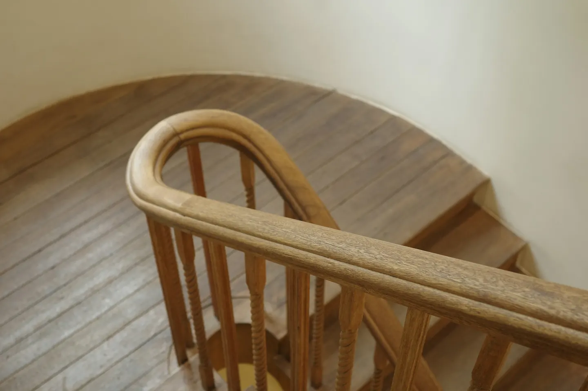

The curved-rail staircase
A winding stair in an old hinterland farmhouse, rebuilt in Blackbutt with a continuous handrail bent and laminated in the shed.

“A curved rail is just a lot of thin strips, a lot of glue and a lot of clamps. Then two days where you are not allowed to touch it.”Ned Harlow, from the shed diary
The story
The original stair was beyond saving, but the owners loved the way the old rail swept round the turn. So Ned templated the curve on site, built a former in the shed, and laminated a new rail in eleven strips of Blackbutt.
The treads and winders are solid Blackbutt, housed into the stringers and wedged from underneath the traditional way. Nothing creaks, and it never will.
- Species
- Timber
- Solid Blackbutt treads, laminated Blackbutt handrail
- Scope
- Template, former, laminated rail, treads, winders, balusters
- Where
- Federal, NSW
Part 1 of 1
The rail
Your turn
Want something like this at your place?
Tell Ned what you are picturing. It takes a minute, and he'll call you back to talk it through.
Keep reading